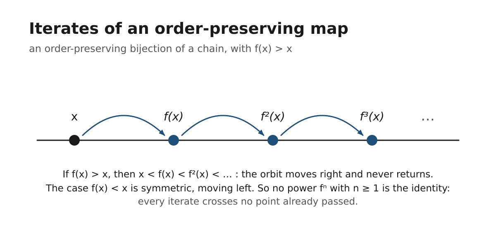
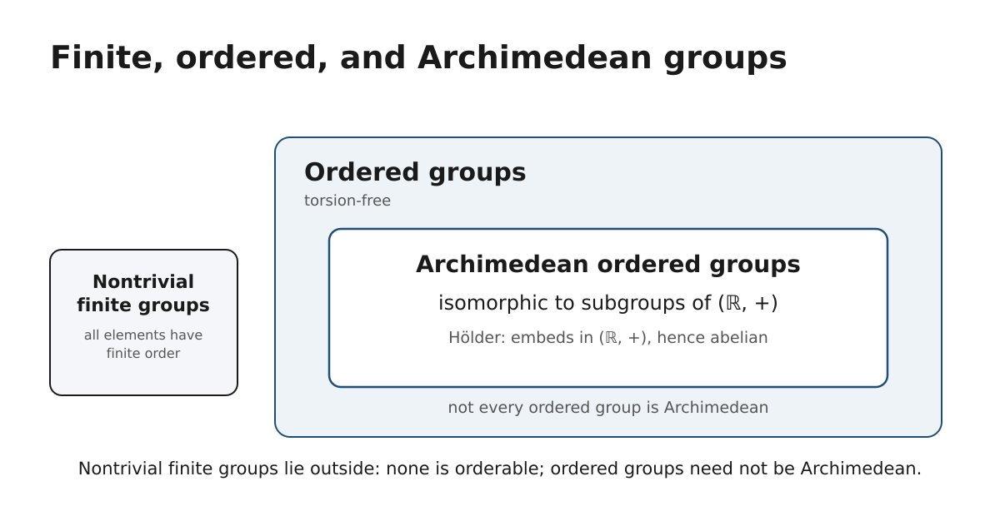
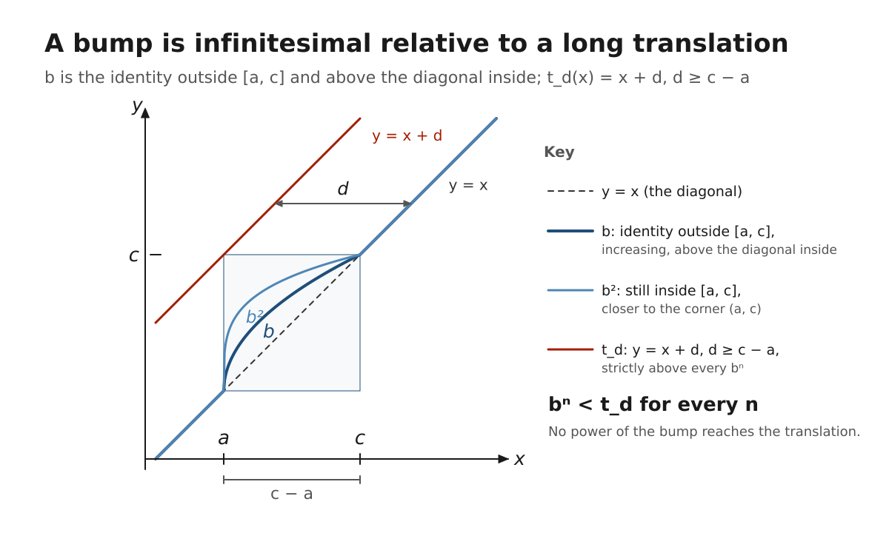

Holland objects · Ordered groups · Notes
Lines Do Not Cross — notes from November 9, 2026
Worked up by Ziggy (Muse) from a conversation with Justin. Two phrases on this page are Justin’s own and are credited to him where they appear: his description of torsion-freeness — ‘lines do not cross’ — and his description of the theory — ‘what isn’t Archimedean.’ Background: Charles Holland’s 1963 embedding theorem (every lattice-ordered group embeds in A(Ω), the order-automorphisms of some chain Ω) and Birkhoff’s Problem 95.
The word game: a Holland object made of Hollands
Build the object out of three hypothetical people who share the name Holland — the same move as the Instagram objects.
The word game needs three people and nothing else. Imagine three hypothetical people who happen to share the surname Holland: a parent, the parent’s child, and the child’s spouse, who took the name. Nothing about them is claimed beyond the name and the records that connect them.
Blocks: the dated ties between them.
- A parent tie is a two-point block {parent, child}.
- A marriage is a two-point block {child, spouse}.
- The roster of a club or group containing Hollands is a block, like a co-post.
Order the blocks by date — that is the chain. The group: all rearrangements of the points that preserve every block, respecting the time order — the ordered automorphism group, product of factorials of the rooms, the sets of points with identical rows.
The object is non-trivial exactly when two Hollands share a row. In the full record they do not: the child sits in the parent block; the spouse does not.
But coarsen the recording — memberships and the marriage only, refusing to look at anything but the bookkeeping — and the marriage block is symmetric, {Holland, Holland}: if the child and the spouse land in all the same groups and have no other recorded tie, their rows coincide, the object gains a swap, and it cannot tell the born Holland from the married-in Holland. Twins by bookkeeping — the same phenomenon as the twin accounts in the Instagram coset.
| Point | Parent block | Marriage block | Same groups |
|---|---|---|---|
| Child | ● | ● | ● |
| Spouse | — | ● | ● |
| Parent | ● | — | — |
Rows differ. The child is in the parent block and the spouse is not — no identical rows, no swap, trivial group.
Torsion, in plain words
Repeating something until you come home — or never coming home at all.
Definition: an element g of a group has torsion if repeating it returns to the identity — gn = e for some n ≥ 1; the least such n is its order. A group is torsion-free if only the identity ever returns.
gn = e — torsion · only e ever returns — torsion-freeExamples from the project’s objects: swapping the twin accounts twice restores everything — order 2; a 3-cycle in a room of three — order 3. Every element of a finite group has torsion: in a finite room, repetition has nowhere else to go.
Why A(Ω) has none — the non-crossing argument. Let f be an order-preserving bijection of a chain and suppose f(x) > x for some point x. Order-preserving gives

…strictly increasing forever — the iterates can never return to x, because returning would require crossing points already passed, and an order-preserving map crosses nothing: if a < b then f(a) < f(b), always. The descending case is symmetric. Hence fn = identity forces f(x) = x for all x.
“Lines do not cross.”
Justin — his summary of this argument, in his own words
Cross-reference to physics: torsion there is twisting; here a torsion element is one that twists back onto itself in finitely many turns — a half-turn rotation has torsion; a translation never does. Loosely, A(Ω) behaves like translations, not rotations.
No field is needed for any of this: torsion is defined for plain groups (and, in a second act, for modules over a ring).
The three rungs
Finite groups, ordered groups, Archimedean ordered groups — three different classes, not a chain of inclusions.
Rung 1Finite groups
Everything has torsion — swaps and cycles, all coming home; the project’s automorphism groups live here. No nontrivial finite group admits a translation-invariant total order, because an ordered group is torsion-free.
Rung 2Ordered groups
Linearly ordered groups, lattice-ordered groups, A(Ω): torsion-free, because lines do not cross. Holland’s embedding theorem lives here — every such group embeds in some A(Ω). Not every ordered group is Archimedean.
Rung 3Archimedean ordered groups
Isomorphic to subgroups of the additive real numbers by Hölder’s theorem — hence abelian, hence tame. This is the real-valued special case, not the whole of the ordered world.
The rungs are not a chain of inclusions. Nontrivial finite groups sit outside the ordered ones; an ordered group need not be Archimedean; the Archimedean ordered groups are the abelian, real-valued special case. The project’s finite objects never meet the Archimedean property, and the reason is this ladder.

The Archimedean property
From Eudoxus, via Archimedes — Euclid, Elements Book V; the engine of the method of exhaustion.
For all positive elements a and b, some finite multiple of a exceeds b — there exists n with
b < n · aNothing is so small that repetition cannot save it; nothing so large that it is out of reach.
Hölder’s theorem: an ordered group with this property embeds in (ℝ, +). The property is standard and is documented on Wikipedia under ‘Archimedean property.’
What isn’t Archimedean
Justin’s description of the theory he was looking at.
“What isn’t Archimedean.”
Justin — his description
Where the axiom fails, infinitesimals live: positive elements a, b with n·a < b for every n. The Holland world is built there.
Example: in A(ℝ), take an automorphism that moves points only inside one small interval — a bump supported in [a, c] — and a translation t_d(x) = x + d longer than that interval, d ≥ c − a. Iterate the bump any number of times: its effect stays inside the interval, and every power lies pointwise below the translation. No power of the bump equals the translation; the bump is infinitesimal relative to it. (For a translation shorter than the bump’s interval the pointwise comparison can fail at points near the left end a — the interval length is the bound.)

More generally, the chains used in Holland’s representation theory are lexicographic stacks: component laid on component, where everything in a lower component is infinitesimal relative to anything in a higher one — the canonical machine for breaking Archimedes’ axiom, and the natural habitat of A(Ω).
So the theory the project’s objects are named after lives on the non-Archimedean side — Justin’s description of what he was looking at: ‘what isn’t Archimedean.’ The finite objects themselves sit outside the question: in a finite room, everything is a few swaps from everything else, and nothing is large or small enough to be infinitesimal.